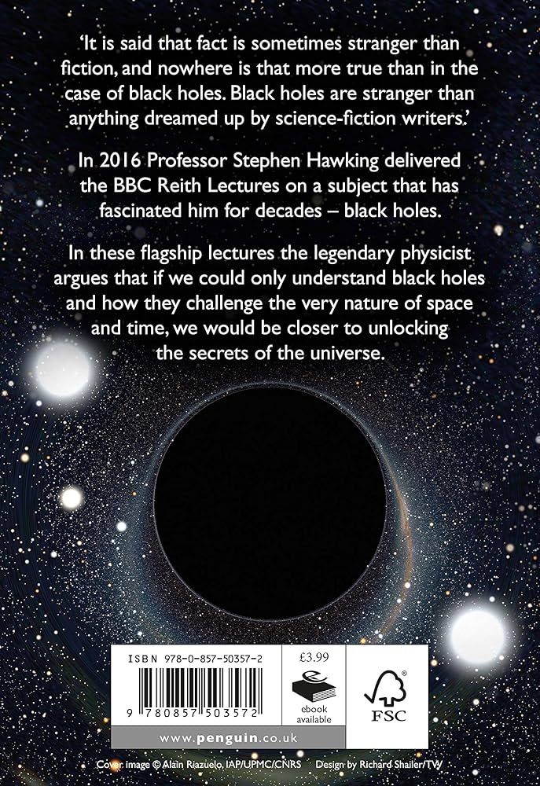

Book Section
The Black Whole

The Black Hole" is a fascinating topic that delves into one of the most mysterious and intriguing phenomena in the universe. Black holes are regions in space where gravity is so strong that nothing, not even light, can escape from them. Formed when massive stars collapse under their own gravity, black holes challenge our understanding of physics and the nature of the cosmos.
Rich Dad & Poor Dad

Rich Dad Poor Dad" by Robert Kiyosaki contrasts the financial mindsets of two father figures in the author’s life—his own father (Poor Dad) and his friend’s father (Rich Dad). Through this comparison, Kiyosaki challenges traditional beliefs about money and education, advocating for financial literacy, entrepreneurship, and the importance of understanding assets and liabilities to build wealth
The Atomic Habit

Atomic Habits" by James Clear delves into the science of habit formation, emphasizing the importance of small, consistent changes that lead to significant improvements over time. Clear provides practical strategies for breaking bad habits and developing good ones, showing how tiny habits can compound into remarkable results, ultimately helping individuals achieve their long-term goals